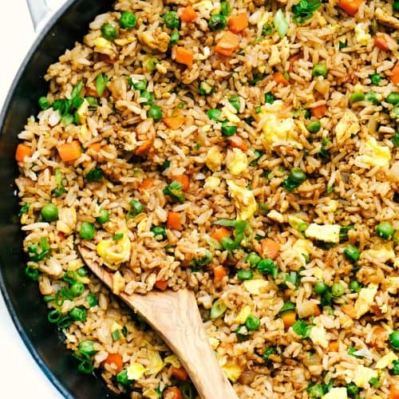

Home
Fried Rice

Description
This dish is absolutely delish. We will make your taste buds absolutely melt at this once in a life time dish
Ingredients
- 2 tbsp oil
- 2 garlic cloves , minced
- 1/2 onion , finely chopped
- 120 g/4 oz bacon, chopped (optional, or use ham)
- 1 1/2 cups diced vegetables , frozen or fresh (Note 1)
- 1 1/2 cups diced vegetables , frozen or fresh (Note 1)
- 2 cups (packed) cooked day old white rice
- 3 eggs, whisked
- 3/4 cup green onions , (shallots / scallions) sliced
Sauce
- 1 tbsp Chinese cooking wine or Mirin (or sake, dry sherry)
- 1 tbsp Oyster Sauce
- 1 tbsp dark soy sauce (or light or all purpose)
- 1/2 tsp sesame oil, optional
- 1/4 tsp white pepper
Method
- Heat about 1 1/2 tbsp oil in a wok or 2 tbsp oil in a skillet over high heat until smoking.
- Add onion, garlic and bacon. Cook until bacon is light golden – about 1 1/2 minutes.
- Add vegetables (still frozen is fine). Cook for 2 minutes so they defrost and water evaporates..
- Add rice and Sauce ingredients. Cook for 1 1/2 minutes until liquid evaporates.
- Shove rice to the side of the wok / skillet.
- Add 1/2 tbsp oil into the cleared space, shift wok so the heat is centred over the cleared space.
- Pour in egg then scramble – cook it through properly, don’t “soft scramble”.
- Add shallots then stir the egg into the rice.
- Remove from heat and serve immediately!
Enjoy!
Back